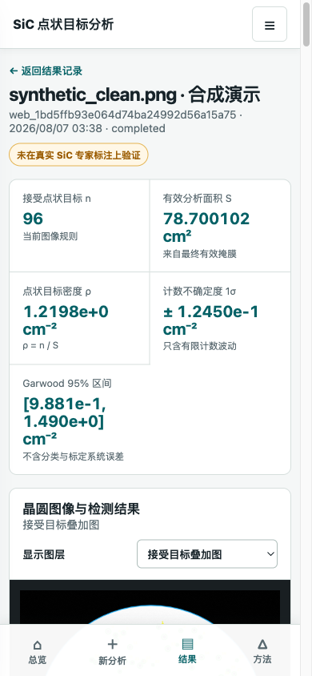

大图与灰度精度
TIFF/BigTIFF 优先使用 tifffile，支持 memory-map、可选 pyvips 与重叠 tile。16 位或浮点科研图像在检测前不会被压缩为 8 位。
程序统计的是“满足当前图像判定和筛选标准的黑色点状目标”。黑点不会自动成为物理意义上的位错。只有材料专家标注或独立实验确认图像目标与位错具有对应关系后，ρ = n / S 才可以作为位错密度解释。
分析与显示通道分离；每一步都保留参数、掩膜、候选和警告。
TIFF/BigTIFF 优先使用 tifffile，支持 memory-map、可选 pyvips 与重叠 tile。16 位或浮点科研图像在检测前不会被压缩为 8 位。
S 来自最终 valid_analysis_mask 的有效像素，而不是无条件套用 78.5398 cm²。缺口、平边、裁剪、边缘排除和无效区都会改变面积。
每个目标都有独立编号、像素与毫米坐标、面积、直径、圆度、离心率、对比度、边界距离、接受状态和拒绝原因。
输出编号叠加图、候选 CSV 和局部裁剪；支持逐个复核以及按晶圆划分校准、验证和锁定测试集，避免同片晶圆跨集合泄漏。
对于拟合直径为 Dpx 的 100 mm 晶圆，程序先建立像素物理标定，再按最终掩膜逐像素求和。
mm_per_pixel = 100 / D_px
S = N_valid_pixels × (cm_per_pixel)²
ρ = n / S
σ_counting = √n / S
圆度、拟合残差、尺寸合理性或裁剪风险不满足要求时会显式警告，不继续生成看似精确的密度。
Poisson / Garwood 区间只反映有限计数波动，不包含漏检、误检、参数选择、面积标定或物理判定错误。
合成数据可验证算法行为和回归稳定性，不能证明真实 SiC 图像的 precision、recall 或位错对应关系。
模拟晶圆经过与真实图像相同的 analyze_image 管线；测试不会读取真值来生成检测结果。

GitHub Pages 是只读展示页。图像上传、TIFF 处理、候选检测和报告生成仍在本机 Python 环境中执行，不会把科研原图发送到本网站。
git clone https://github.com/sma084545-pixel/sic-wafer-point-counter.git
cd sic-wafer-point-counter
python3.10 -m venv .venv
source .venv/bin/activate
python -m pip install -e ".[test]"
python scripts/generate_synthetic_wafer.py --all --output-dir sample_data/generated
python -m pytest -q
.venv/bin/python -m sic_wafer_counter.cli web --workspace .然后访问 http://127.0.0.1:8765/。本机工作台刻意只监听回环地址。